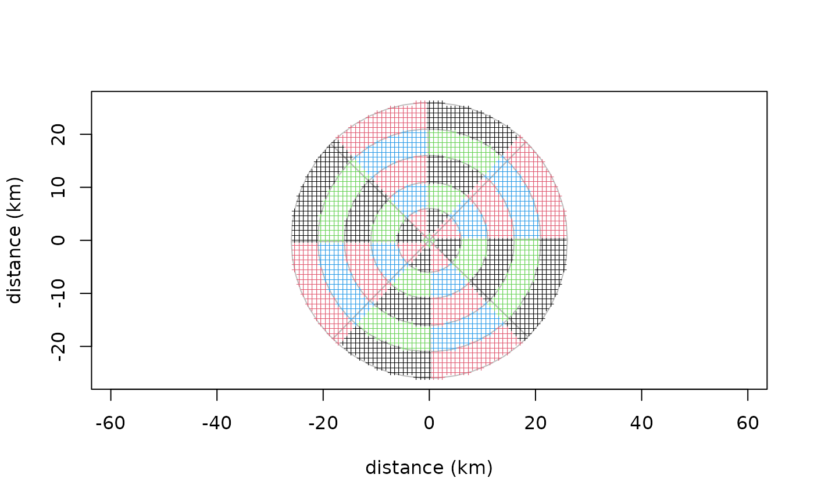

Create and manipulate a window of analysis for landscape descriptors used in AURELHY
auremask.RdAn AURELHY window of analysis ('auremask' object) specifies the regions relative to the point that define the various variables describing the landscape.
Arguments
- type
the type of window, either
"radial"(by default), or"rectangular"as in the initial version of the AURELHY method.- dist
A vector of distances (in km) to consider in the window for the
"radial"window, or the distance to consider between two grid points for a"rectangular"window (in this case, if you provide several distances, only the smallest one will be considered)- angles
A vector of angles in radians to use to construct a
"radial"window. This argument is ignored for"rectangular"window. Avoid to use angles parallels to the grid, like 0 or pi/4, because you will have points going into one or the other sector of your window of analysis, depending on rounding of the numbers in the floating-point calculations! A slight shift angle (0.01, by default) avoids this instability- n
The number of grid points in latitude and longitude to use for a
"rectangular"window. For instance, ifn = 11, the window will be made of 11*11 = 121 points (minus one ifkeep.origin is FALSE). This argument is ignored for a"radial"window.- keep.origin
Is the origin where the window is centered considered as one point of the grid, or not (by default, not, as in the original implementation of the AURELHY method)
- x
An 'auremask' object
- geomat
A reference grid, as a 'geomat' object against which the window of analysis is tested (print or plot the number of points that are located in each sector of the window)
- y
Same as
geomat- ...
further arguments passed to the function
Value
An 'auremask' object with all information required to mask a 'geotm' object (terrain model) for creating landscape variables required by the AURELHY method.
See also
Examples
# Default window of analysis
am <- auremask()
am
#> An auremask object defining a radial mask
#> The window of analysis uses 48 points excluding origin
#> Distance considered (km):
#> [1] 1 6 11 16 21 26
#> ... at angles (rad):
#> [1] 0.010 0.795 1.581 2.366 3.152 3.937 4.722 5.508
# Get an example terrain model and apply the window on it
data(morocco)
plot(am, morocco)

# Further statistics are displayed with print() if a grid is provided too
print(am, morocco)
#> An auremask object defining a radial mask
#> The window of analysis uses 48 points excluding origin
#> Distance considered (km):
#> [1] 1 6 11 16 21 26
#> ... at angles (rad):
#> [1] 0.010 0.795 1.581 2.366 3.152 3.937 4.722 5.508
#> Total number of points used: 2814
#> with the following repartition per sector:
#> angle
#> dist 1 2 3 4 5 6 7 8
#> 1 18 17 16 20 18 17 16 20
#> 2 47 41 40 49 47 41 40 49
#> 3 75 66 64 77 75 66 64 77
#> 4 105 89 89 106 105 89 89 106
#> 5 129 115 113 131 129 115 113 131